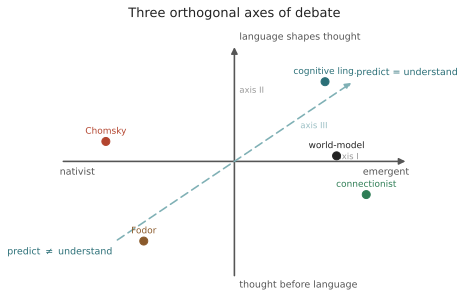

意义 IV · 三条正交争议轴
对标：综合 ling-0104、mean-0103 ｜ 前置：本线全部 ｜ 证据地位：这是一张导航图（框架），不是新结论。它的价值在于把散落的争论正交化，让你不再被"语言中心主义"的糊涂话淹没。 全课的罗盘在这一页。线一到线三我们摆了一堆对峙——先天 vs 涌现、语言 vs 思想、预测 vs 理解。它们看似一团，其实是三条互相独立的轴。学会把任何立场/论文钉到这三轴的一个点上，你就有了导航。混淆这三轴，是本领域最普遍的糊涂——分开它们，是这门课最实用的一招。
1. 为什么必须"正交化"
最常见的思维事故：把三件逻辑独立的事捆成一个"语言 vs 反语言"的立场包。比如有人一听你说"智能从语料涌现"，就默认你也主张"语言塑造思想""预测就是理解"——其实这三条毫不蕴含彼此。
正交（orthogonal）的意思：一条轴上的立场，不决定另一条轴上的立场。你可以在任意组合上落点。把它们画成三条独立坐标轴，是防止语言中心主义（"语言是一切的核心"这种含混大词）最有力的工具——因为它逼你对每条轴分别举证。
2. 三条轴
轴 I · 结构从哪来（先天 ↔ 涌现） 语言的结构是先天蓝图（UG）还是从数据 + 通用偏置涌现？ 证据在：刺激贫乏、Gold/PAC（mean-02）、语法化/效率律（ling-03、info-03）、LLM 习得。 裁判性：较高——可形式化（样本复杂度、偏置强度）、可实验（LLM 消融、习得研究）。多数【实/争】。
轴 II · 语言与思想的方向（语言塑造思想 ↔ 思想先于语言 ↔ 共演化） 语言决定/塑造思维（Whorf、Vygotsky、认知语言学）？还是思维先于且独立于语言（Piaget、Fodor mentalese）？还是二者反馈共演化（本课倾向）？ 证据在：Whorf 现代严肃版实验、Fedorenko 语言⊥推理网络分离（线五 mind-02）、无语言者研究。 裁判性：中——有神经/行为证据，但解释高度【争】。
轴 III · 预测是否等于理解（是 ↔ 否） 高质量的下一符号预测能否构成/产生真正的理解？ 证据在：中文房间/章鱼（mean-03）vs 世界模型/Othello-GPT/机制可解释性（线六 ai-01/02）。 裁判性：分层——功能层【实】，指涉层【前沿】，现象层【思】（承 mean-03 §5 的三层接地）。

3. 把学派钉上去（示例）
用三轴给主要立场定位（〈轴 I, 轴 II, 轴 III〉，粗略示意，不是精确坐标）：
| 立场 | 轴 I 结构 | 轴 II 语言↔思想 | 轴 III 预测=理解 |
|---|---|---|---|
| Chomsky 生成派 | 先天 | 语言≈独立模块 | （多不表态/偏否） |
| 连接主义/涌现派 | 涌现 | 使用塑造 | 倾向是（预测足够） |
| 认知语言学 | 涌现（具身） | 语言≈思想（强） | 不直接表态 |
| Fodor（思维语言） | 先天（概念先天） | 思想先于语言 | 否 |
| Bender & Koller | （不表态） | —— | 否（form≠meaning） |
| 世界模型派/LLM 乐观 | 涌现 | —— | 是（功能/指涉层） |
读这张表的正确方式：注意空格和冲突组合。Chomsky 先天（轴 I）却不必主张预测=理解（轴 III）；世界模型派主张预测=理解（轴 III）却对轴 II 沉默。没有哪个学派占满三轴——这正说明三轴独立。你自己的立场，也该在三轴上分别落点、分别举证，而不是买一个现成的"立场套餐"。
4. 这张罗盘怎么用
用法一 · 定位论文：读到一篇论文，先问它在哪条轴上说话、落在哪端、拿什么证据。很多"惊人结论"一定位就现原形——它其实只动了一条轴，却被标题包装成回答了整个大问题。
用法二 · 拆解糊涂话：遇到"语言创造了人类智能/意识"这种大词，逐轴追问：你是说结构从语言涌现（轴 I）？思维依赖语言（轴 II）？还是语言预测产生理解（轴 III）？——追到具体一轴，宏大命题才变成可讨论的。这是把 §1 的"语言中心主义"解毒的标准流程。
用法三 · 设计你的研究：你的大问题"语言如何促成智能"横跨三轴。别一次打三轴——挑一条、挑它上面一个可结算的小命题，用线二的信息论工具去量。（这正是收官 capstone 要你做的，也是 Medusa forward-only 纪律的学术版。）
5. 三轴与甲乙丙的对应
把导论的甲乙丙（三个因果问题）和这三轴对齐，收口全课前半：
- 甲（机器为何行） 主要活在轴 I 涌现端 + 轴 III——最可解，线二/线六。
- 乙（人的智能是否源于语言） 主要活在轴 II——最纠缠，线五。
- 丙（语言与意识/文明） ——文明部分可考据（线四），意识部分是轴 III 现象层 = 【思】（线五 mind-03）。
一句话：甲乙丙是"问什么"，三轴是"沿哪个维度回答"。两套坐标叠起来，你就有了给整个领域画地图的能力——这比记住任何一派的结论都耐用。
6. 要点与思考
思考 1（正交是纪律不是事实） 严格说三轴未必完全独立（如强具身认知会让轴 II 与轴 I 相关）。但把它们当正交来审，是一种方法论纪律：它逼你对每条轴单独举证，防止一个立场"搭便车"带过另两条。当你发现两轴真的耦合时，那本身就是一个值得写的发现——先默认正交，再去找耦合。
思考 2（你已经能导航了） 走到这里，线一（四传统）+ 线二（信息论）+ 线三（意义）给了你透镜、尺子、罗盘。接下来线四（文明）、线五（心智）会往轴 II 和丙问深入，线六（机器）会往轴 I 涌现端和轴 III 深入。每读一页，都试着把它钉到三轴上——这个习惯会让后半程事半功倍。
思考 3（防身） 以后再看到"某某证明了语言是智能的本质/意识的前提"这类标题，条件反射地问三句：动了哪条轴？落在哪端？拿什么当裁判？ 十有八九，宏大标题背后是一条轴上的一个有限结果。能这样拆，你就已经在用研究者的眼睛读文献了。 \(\blacksquare\)
线三完。你已握齐透镜、尺子与罗盘。下一线转身离开机器与语料，走向人与群体：语言如何让文化累积、让文明沉积？识字如何重写大脑？这是丙问里可考据的那一半——不是思辨，是历史与考古的硬证据。